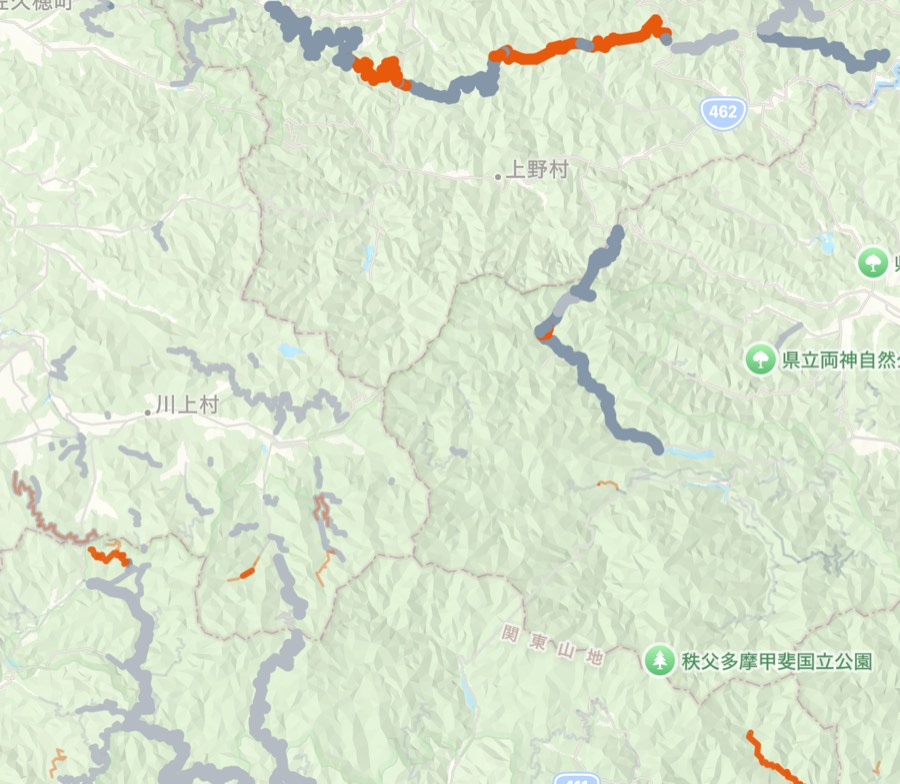
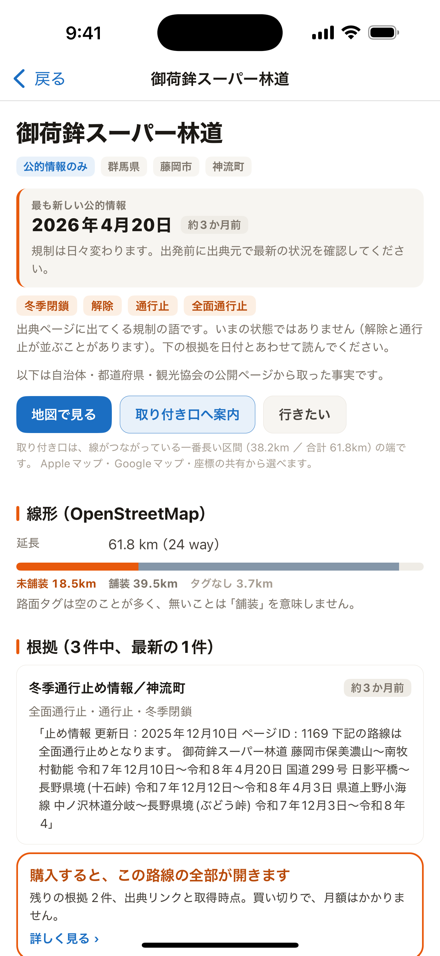
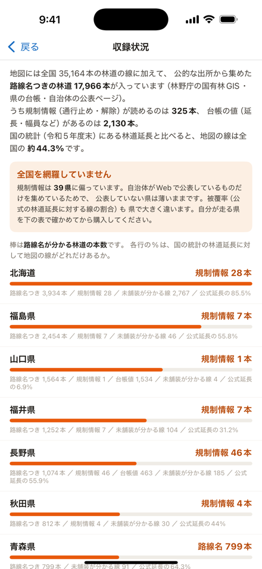
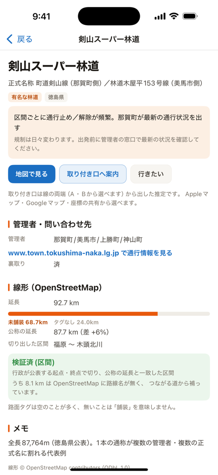
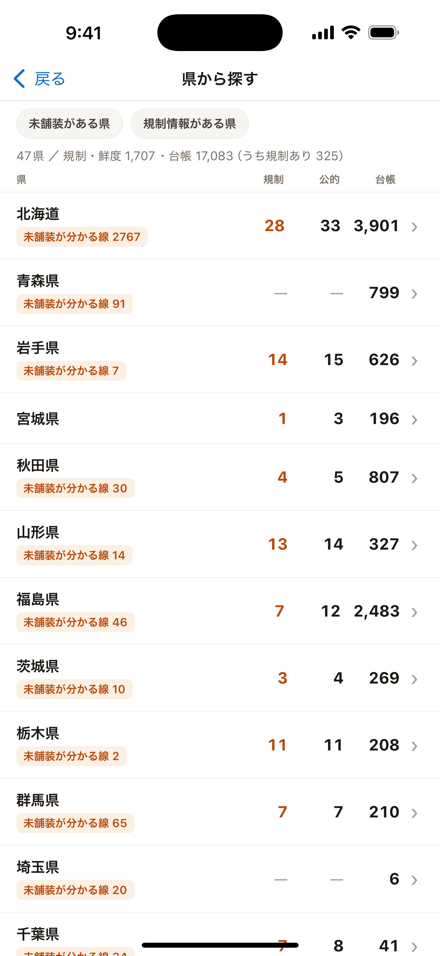

iPhone アプリ「林道ファインダー」
行ってみたら通行止め、を減らす。
全国の林道の線形に、自治体・都道府県・林野庁が公表している通行止めと台帳の値を 出典と日付つきで重ねた地図です。データは全部アプリの中に入っています。

線の色は路面（未舗装／舗装／路面不明）、 太さは持っている情報の濃さ。上野村・秩父多摩甲斐国立公園のあたり。
出典と日付が、いつも一緒に出る
要約しない。自治体が書いた文をそのまま置く
通行止めの情報は、市区町村・都道府県・観光協会の公開ページから取った 逐語の引用です。アプリはそれを言い換えません。 路線を開くと最初に出るのは「最も新しい公的情報が何年何月何日のもので、いま何日前か」。 下は実際の表示（山梨県・林道南アルプス線）を、そのままの形で並べたものです。
アプリの路線画面と同じ形
最も新しい公的情報
39日前
通行止解除崩落ゲート
出典ページに出てくる規制の語です。いまの状態ではありません（解除と通行止が並ぶことがあります）。 下の根拠を日付とあわせて読んでください。
南アルプスマイカー規制情報｜早川町役場
39日前「…7月11日(土) 5:30に通行規制が解除されました。」
www.town.hayakawa.yamanashi.jp ↗ 2026年7月時点
主体（早川町）・出典URL・取得日が路線ごとに付きます。 台帳の値も同じ扱いで、山梨県の公式値「延長 19.206km ／ 幅員 3.5〜5.0m」と OpenStreetMap の線形 22.8km の両方を出します。片方に寄せません。
電波の無いところで開く前提で作っている
林道のデータは全部アプリの中（55MB）
線形・規制・台帳・出典・引用文は、すべて端末に入っています。 路線を引くのに通信は一切しません。 谷筋でアンテナが立たなくても、路線名・規制の記録・管理者の問い合わせ先・ 取り付き口の座標は出ます。
電波が要るのは地図の背景タイルだけです（Apple マップを使っています）。 圏外では背景が抜けますが、林道の線・現在地・路線の情報はそのまま読めます。
アカウント登録なし・解析なし・広告なし・開発者のサーバーなし。 現在地は「近い順」の並べ替えのために端末の中だけで使い、外に出しません。
何が、どこから、何本入っているか
| 層 | 本数 | 出どころ |
|---|---|---|
| 下地の線形 | 35,164 | OpenStreetMap（ODbL 1.0）／ 総延長 44,374km |
| 国有林の路線 | 12,381 | 林野庁 国有林GISデータ 2024年度版（公共データ利用規約 第1.0版）／ 全件に路線名あり |
| 県の林道台帳（名前あり） | 4,914 | 各県・各市町村の公開GIS（山口・福島・長野・熊本・神奈川・岐阜ほか） |
| 自治体の公表ページ | 1,707 | 市区町村・都道府県・観光協会・公式台帳PDF |
| うち規制情報が読める | 325 | 通行止・解除・冬季閉鎖・崩落など。39都道府県に分布 |
| うち台帳の値がある | 2,130 | 延長・幅員・舗装延長・区分 |
| 名指しで探される有名林道 | 37 | 正式名が県道・市道のものを含む（例：剣山スーパー林道＝町道剣山線ほか） |
| 福井県の林道路網 | 1,800 | 福井県 林道路網データ（CC BY 4.0）／ 2,358.8km |
全国を網羅していません。薄さは購入前に見せます
規制情報は自治体がWebで公表しているかどうかで決まるので、県による偏りが大きく、 記録が0件の県もあります。国の統計（林野庁 森林・林業統計要覧2025・令和5年度末）の 林道延長と比べた被覆率も県ごとに大きく違います。
アプリの「収録状況」画面は無料です。自分が走る県に何本入っているかを、 買う前に必ず確かめてください。
画面





読みもの
記事林道は全国に何kmある？ 都道府県別ランキング
林野庁の統計と OpenStreetMap の実測で数えた、都道府県別の総延長・本数・未舗装本数。 数値はアプリ同梱データの正本から生成しています。
記事を読む ›購入と復元
買い切り1本だけ。サブスクはありません
無料のまま使える範囲は、買っても減りません。
- 全国 35,164本の林道の地図・路面の色分け・路線名
- 管理者・問い合わせ先と、路線ごとの最新の規制情報1件
- 行きたいリストの保存、現在地から近い順の一覧、収録状況の画面
アプリ内課金（買い切り・非消耗型／¥800）を買うと、これが開きます。
- 規制の全履歴と根拠（無料は最新の1件）
- 台帳の値（延長・幅員・舗装延長・区分）— 2,130路線
- 出典リンクと、その情報がいつ時点のものか
- 検索の絞り込み（ダート・通行止め除外・線のある路線）
月額使用料はかかりません。支払いは App Store（Apple）を通じて処理されます。 価格は App Store の表示が正です。
機種変更・再インストールしたとき
購入は Apple ID に紐づいています。同じ Apple ID でサインインした端末で、 アプリの購入画面にある「購入を復元する」を押すと、追加の支払いなしで戻ります。
復元しても開かないときは、下のサポート窓口へご連絡ください。 返金は Apple のサポート（reportaproblem.apple.com）から申請できます。 購入の処理は Apple が行うため、開発者側では返金操作ができません。
サポート窓口
不具合の報告・情報の訂正
個人開発です。全部読みます。返信は1〜2日いただくことがあります。 「この林道の情報が違う」という指摘は、路線名とおおよその場所を添えてもらえると助かります。 確認のうえ訂正します。
免責事項
現地の規制標識・ゲート・管理者の指示が常に優先します
アプリに入っている通行止め・規制の情報は、自治体・都道府県・林野庁などが公開した情報の転載であり、 過去のある時点の記録です。いま通行できることを保証するものではありません。
各情報に付いている「◯年◯月時点」を確認し、走行前に必ず管理者の公式情報で最新の状況を確かめてください。 現地で標識・ゲート・管理者の指示と食い違った場合は、現地の規制が優先します。
林道の走行はご自身の判断と責任で行ってください。 本アプリの情報を利用したことによる損害について、開発者は責任を負いかねます。
出典のページは消えたり内容が変わったりすることがあります。 誤りを見つけた場合はサポート窓口までお知らせください。
出典とライセンス
- 林道の線形・路面: © OpenStreetMap contributors（ODbL 1.0）
- 国有林の路線名・線形: 林野庁 国有林GISデータ 2024年度版（公共データ利用規約 第1.0版・基準時点 2024年4月1日）
- 福井県の林道線形: 福井県 林道路網データ romou_rindou（CC BY 4.0）
- 県の林道台帳: 各県・各市町村が公開しているGISサービス（出典と取得日を路線カードに表示。指摘があれば即時削除します）
- 通行止め・台帳値: 全国の市区町村・都道府県・観光協会の公開情報
- 被覆率の分母: 林野庁 森林・林業統計要覧2025 表18 既設林道の現況（令和5年度末）
- 地図の背景: Apple マップ（MapKit）
各路線カードに主体名・出典URL・取得日を表示しています。
プライバシー
何も集めません
アカウント登録なし・解析なし・広告なし・開発者のサーバーなし。 現在地は「近い順」の表示のために端末の中だけで使い、送信しません。 詳しくはプライバシーポリシーへ。